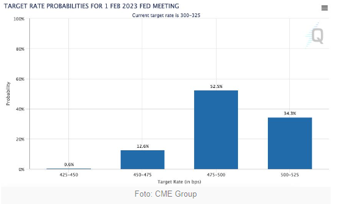
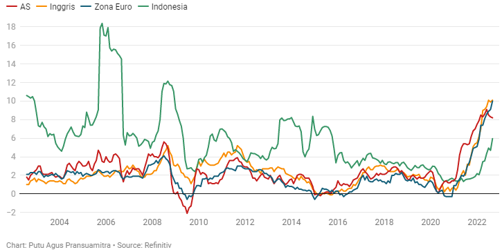

ISU KRITIS RESESI 2023
Muhammad Zulfikar Septriawan - 312021002
Muhammad Zulfikar Septriawan - 312021002
Jakarta, CNBC Indonesia Isu resesi dunia berhembus semakin kencang belakangan ini. Inflasi tinggi melanda berbagai negara membuat bank sentralnya agresif menaikkan suku bunga. Bank sentral Amerika Serikat (The Fed) misalnya, sepanjang tahun ini kenaikannya sebesar 300 basis poin, menjadi 3% - 3,25% dan masih akan terus berlanjut. Pada November nanti, bank sentral paling powerful di dunia ini diperkirakan akan menaikkan lagi sebesar 75 basis poin menjadi 3,75% - 4%. Tidak cukup sampai di situ, kenaikan masih akan terus dilakukan hingga awal tahun depan.
Berdasarkan data dari perangkat FedWatch milik CME Group, pasar melihat suku bunga The Fed berada di level 4,75% - 5% pada Februari 2023.
Langkah agresif tersebut dilakukan guna menurunkan inflasi yang saat ini masih berada di dekat level tertinggi dalam 40 tahun terakhir. Jika inflasi tidak juga turun, maka stagflasi yang akan terjadi, dan ini lebih buruk ketimbang resesi. Tidak seperti resesi yang sering terjadi, stagflasi cukup langka. Istilah stagflasi pertama kali muncul pada 1970an di Amerika Serikat (AS), dan belum lagi pernah terjadi.
Stagflasi merupakan periode pelambatan atau stagnannya perekonomian disertai dengan inflasi yang tinggi. Sementara resesi merupakan kontraksi pertumbuhan ekonomi setidaknya dalam dua kuartal beruntun. Efek keduanya sama-sama buruk bagi perekonomian maupun masyarakat, tetapi stagflasi bisa lebih parah. Ketika inflasi tinggi dan produk domestik bruto (PDB) melambat atau stagnan, maka perlahan-lahan kondisi ekonomi akan semakin memburuk atau 'mati pelan-pelan'.
Saat kondisi perekonomian memburuk, pemutusan hubungan kerja (PHK) akan terjadi secara masif, dan tingkat pengangguran akan meroket. Inflasi dan tingkat pengangguran yang tinggi bisa menjadi ciri khas dari stagflasi. Sebab, keduanya biasanya berkebalikan. Ekonom Nouriel Roubini, atau yang dikenal dengan Dr. Doom, ketika sukses memprediksi krisis finansial 2008, kini memproyeksikan resesi akan menghantam Amerika Serikat di akhir 2022 sebelum menyebar secara global tahun depan. "Ini tidak akan menjadi resesi yang singkat dan dangkal, ini akan menjadi resesi yang parah, panjang dan buruk," kata Roubini, sebagaimana dilansir Fortune, Rabu (21/9/2022).
Ia melihat kondisi ekonomi saat ini mirip dengan 2007/2008, dilihat dari tingginya utang negara dan korporasi. Menurut Roubini angka rasio jumlah utang swasta dan publik terhadap Produk Domestik Bruto (PDB) global yang telah melonjak dari 200% pada 1999 menjadi 350% tahun ini. Artinya ada risiko resesi yang terjadi gabungan antara 1970an dan 2008, dan ini bisa sangat mengerikan. Dalam artikel Majalah Time yang terbit Kamis (13/10/2022), Dr. Doom mengatakan dunia akan menuju "kebangkrutan besar-besaran dan krisis finansial yang berlarut-larut".
Menteri Keuangan Sri Mulyani Indrawati dalam berbagai kesempatan turut menyinggung soal resesi yang diperkirakan terjadi pada 2023. Dia menilai kondisi saat ini dapat dipastikan memberikan dampak bagi pertumbuhan ekonomi, termasuk di Indonesia. “Bank Dunia menyampaikan, kalau bank sentral di seluruh dunia melakukan peningkatan suku bunga secara cukup ekstrim dan secara bersama-sama, maka dunia akan mengalami resesi pada 2023,” katanya dalam konferensi pers APBN Kita, Senin (26/9/2022).
Isu resesi yang akan menghantam di tahun 2023 semakin menggema. Tapi, Pemerintah Kota (Pemkot) Bandung tetap optimistis menghadapi isu resesi ini. Karena, menurut Sekretaris Daerah (Sekda) Kota Bandung, Ema Sumarna, sejumlah upaya dan langkah strategis dilakukan untuk menjaga stabilitas ekonomi masyarakat. Menurutnya, kondisi Kota Bandung pada bulan September 2022 terjadi inflasi sebesar 0,91 persen dengan Indeks Harga Konsumen (IHK) sebesar 112,85. Jawa Barat terjadi inflasi sebesar 1,21 persen, sedangkan nasional terjadi inflasi sebesar 1,17 persen. "Resesi jelas bukanlah kondisi yang menguntungkan bagi perekonomian. Saat resesi ekonomi terjadi hampir semua jenis bisnis baik yang berskala besar maupun berskala kecil akan terkena dampaknya," ujar Ema dalam Diskusi Prediksi Resesi di Balai Kota Bandung, belum lama ini.
Ketika mendengar isu resesi di tahun depan, kamu jangan panik atau ketakutan, tapi kendalikan diri dan tetap tenang. Ramalan resesi itu masih diduga-duga alias belum kejadian. Jadi, daripada panik, lebih baik kamu mulai atur strategi untuk menghadapi resesi jika hal tersebut benar-benar terjadi. Strategi yang bisa diterapkan sangat tergantung pada pengelolaan keuangan. Berikut beberapa strategi yang bisa kamu pakai untuk melawan resesi:
1. Kurangi Pengeluaran yang Tidak Perlu Sebagai manusia, pasti ada saja keperluan yang harus dipenuhi setiap harinya, setiap bulannya. Keperluan yang kita pikir penting terkadang hanyalah untuk memenuhi keinginan pribadi. Agar kamu bisa memiliki simpanan uang saat terjadi resesi, maka kamu perlu mengurangi pengeluaran konsumtif yang dirasa tidak perlu. Misalnya, kurangi biaya dan frekuensi liburan, mulai sering memasak makanan di rumah, kurangi laundry pakaian dan mulai beralih untuk mencucinya sendiri.
2. Lunasi Utang atau Cicilan Kemudahan untuk mengakses uang sangat dirasakan oleh mayoritas masyarakat. Tak hanya itu, orang-orang juga sekarang sudah mulai menggunakan cicilan untuk membayar transaksi mereka, baik itu menggunakan paylater maupun kartu kredit. Tanpa sadar, kebiasaan tersebut akan membuat kamu terus menumpuk utang, dan hal tersebut bukan hal yang baik apalagi jika seandainya resesi benar-benar terjadi. Jadi, segeralah lunasi semua cicilanmu karena ketika resesi terjadi ada kemungkinan dilakukan pemutusan kontrak kerja atau pengurangan gaji bulanan, sehingga penghasilanmu berkurang.
Indonesia diperkirakan akan mengalami dampak resesi yang cukup parah karena masuk negara berkembang. Resesi Ekonomi 2023 diperkirakan akan lebih parah dibandingkan krisis yang pernah terjadi pada tahun 2007 sampai 2009 yang lalu. Baca Juga: Jenis-jenis Investasi Yang Aman Hadapi Resesi Ekonomi Global 2023 Prediksi ini dirilis secara resmi oleh UN Conference on Trade and Development (UNCTAD). UNCTAD memprediksi bahwa perekonomian dunia akan melambat sebesar 0,3 persen pada tahun 2023 mendatang. UNCTAD juga memprediksi bahwa Indonesia akan kehilangan potensi ekonomi. Ini membuat Indonesia harus bersiap menghadapi Resesi Ekonomi 2023.


Dokumentasi pada 21 November 2022, 12.04 PM
Dokumentasi pada 21 November 2022, 12.04 PM